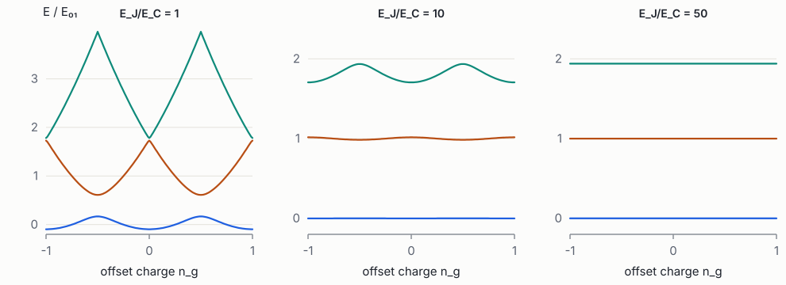

Foundations of Quantum Engineering · Book 6 of 7
Quantum Hardware: Superconducting Circuits and Other Qubits
Superconductivity, Josephson junctions, circuit quantisation, circuit QED, gates, decoherence, and trapped ions, neutral atoms and spins
How to use this book
This book is about building qubits. Most of it concerns superconducting circuits, because they are the platform whose design most resembles classical chip design, whose parameters are set by drawn geometry and fabrication process, and which the review treats in most depth. The final chapter applies the same questions (what is the qubit, what sets its parameters, what limits its coherence, what varies in manufacture) to trapped ions, neutral atoms, spin qubits and topological proposals; photonic qubits were the subject of Book 5.
The chapters follow the path of a designer: superconductivity (why the metal is special), the Josephson junction (the one nonlinear element), circuit quantisation (from a circuit diagram to a Hamiltonian), circuit QED (how qubits are read out and coupled), gates (how they are controlled), and decoherence (what limits them). By the end you should be able to take the parameters of a real transmon processor, explain where each number comes from, and say what a 1% change in each fabrication input would do. That is the starting point of the review's §3–§5.
Prerequisites: Book 2 (especially the circuit Lagrangian, transmission lines and thermal noise), Book 3 (oscillators, two-level systems, perturbation theory, open systems) and Book 5 Chapter 4 (Jaynes–Cummings). The engineer's guide by Krantz et al. [1] and the review of circuit QED by Blais et al. [2] are the best companions.
Words you will meet
Skim this list now and come back to it while reading.
- Superconductor
- A metal that, below a critical temperature \(T_c\), carries current with no resistance; its electrons form Cooper pairs.
- Cooper pair
- Two electrons bound together by lattice vibrations; the charge carriers of a superconductor (charge \(2e\)).
- Gap \(\Delta\)
- The minimum energy to break a Cooper pair (per resulting quasiparticle); about 180 µeV in aluminium.
- Quasiparticle
- An excitation of a superconductor left behind when a pair breaks; a source of qubit loss.
- Josephson junction
- Two superconductors separated by a ~1–2 nm insulator; a lossless nonlinear inductor with energy \(-E_J\cos\varphi\).
- \(E_J\), \(E_C\)
- Josephson energy (depth of the junction's potential) and charging energy (cost of adding one electron); their ratio decides the qubit type.
- SQUID
- Two junctions in a loop; a junction whose \(E_J\) is tuned by magnetic flux.
- Flux quantum \(\Phi_0\)
- \(h/2e\approx2.07\times10^{-15}\) Wb: the unit in which flux through a superconducting loop is quantised.
- Transmon
- A junction shunted by a large capacitance (\(E_J/E_C\approx50\)); the most widely used superconducting qubit.
- Anharmonicity \(\alpha\)
- How much the \(1\to2\) transition differs from \(0\to1\); lets a pulse drive only the qubit transition.
- Resonator
- A length of superconducting transmission line with a sharp resonance; used to read out and couple qubits.
- Dispersive shift \(\chi\)
- The qubit-state-dependent shift of a resonator's frequency; the basis of readout.
- Purcell decay
- Qubit energy leaking out through its readout resonator.
- Coupler
- A circuit element (often a tunable transmon) that switches the interaction between two qubits on and off.
- Participation ratio
- The fraction of a mode's electric energy stored in a given material region; multiplied by that region's loss tangent it gives loss.
- TLS
- Two-level system: a microscopic defect in an amorphous material that absorbs microwave energy; the main source of qubit loss.
1 Superconductivity for quantum engineers
Goals
- Know the experimental facts of superconductivity and the materials used in quantum chips.
- Understand, in pictures and then in formulas, how electrons pair up (Cooper pairs) and why that creates an energy gap.
- Describe the superconductor by one macroscopic wavefunction, and derive from it the penetration depth and flux quantisation.
- Understand kinetic inductance and quasiparticles quantitatively, because both are design and process variables.
Why are the leading quantum computers made of superconductors? Because a superconductor is a metal with no electrical resistance and, below a certain energy, no way to absorb energy at all. A circuit made of it can oscillate for a very long time without losing energy, and, more remarkably, all of its billions of electrons move together as one quantum object described by a single wavefunction. That lets an engineer draw a circuit with a pencil (well, lithography) and get an "artificial atom" whose quantum states are set by the circuit's shape. This chapter explains the parts of superconductivity that a qubit designer actually uses, with no prior knowledge assumed.
1.1 The facts
In 1911 Kamerlingh Onnes cooled mercury with liquid helium and found that below 4.2 K its electrical resistance vanished entirely. Below a critical temperature \(T_c\), many metals become superconductors:
- Zero DC resistance. A current started in a superconducting ring keeps flowing for years without a battery.
- Expulsion of magnetic field (the Meissner effect). A superconductor pushes out a weak magnetic field, except in a thin surface layer.
- Limits. Superconductivity is destroyed by too high a temperature, too strong a magnetic field, or too large a current density.
The materials in quantum chips, and why each is used:
| Material | \(T_c\) | Typical use |
|---|---|---|
| Aluminium (Al) | 1.2 K | Josephson junctions (its oxide makes an excellent thin barrier) |
| Niobium (Nb) | 9.2 K | Wiring, resonators, capacitor pads |
| Tantalum (α-Ta) | 4.4 K | Low-loss capacitor pads and resonators |
| Titanium nitride (TiN) | ~4.5 K | Low-loss resonators, high kinetic inductance when thin |
| NbN, NbTiN, granular Al | 10–15 K (NbN), ~2 K (grAl) | High kinetic inductance: superinductors, compact resonators, detectors |
Quantum chips operate at 10–20 mK in a dilution refrigerator, far below every \(T_c\), so the metals are deep in their superconducting state. The extra cold is needed not for superconductivity but to keep the qubits themselves in their ground state (Book 2 §8.2).
1.2 Why electrons pair: Cooper pairs and the gap
In an ordinary metal, electrons fill energy levels up to the Fermi energy, one electron per state (Pauli exclusion, Book 3 §9.1). Resistance comes from electrons scattering off vibrations and defects of the crystal.
Picture an electron moving through the lattice of positive ions. It attracts the nearby ions slightly, leaving behind a region of extra positive charge, like a ball rolling over a mattress leaves a dent. Because the ions are heavy and slow, the dent lasts a little while, and a second electron is attracted to it. The net effect is a weak attraction between electrons, mediated by lattice vibrations (phonons), which can beat their electrical repulsion.
In 1956 Cooper showed that the filled sea of electrons is unstable to any such attraction, however weak: two electrons with opposite momenta and opposite spins just above the Fermi surface form a bound pair, a Cooper pair. In 1957 Bardeen, Cooper and Schrieffer (BCS) showed that all the electrons near the Fermi surface pair up together into one collective ground state [3]. Pairs are composite objects with total spin zero, so they behave like bosons and can all share the same quantum state, much as photons do in a laser.
Breaking a pair costs energy. The excitations above the paired ground state, called quasiparticles, each need energy at least \(\Delta\), the superconducting gap, and since breaking a pair creates two of them, the minimum energy to disturb the condensate is \(2\Delta\). BCS theory predicts
For aluminium, \(\Delta\approx180\) µeV, so \(2\Delta/h\approx88\) GHz. A 5 GHz microwave photon carries less than a tenth of that, so it cannot break pairs: the condensate simply cannot absorb it [4]. That is the deepest reason superconducting resonators can store microwave energy with quality factors above a million (Book 2 §3.1).
"Zero resistance" is strictly true only for DC. At any nonzero frequency there is a tiny loss, because the few thermally excited quasiparticles can absorb energy, and because the supercurrent's inertia (kinetic inductance, below) makes the response partly reactive. At 20 mK and 5 GHz this intrinsic loss of aluminium is negligible; real losses in qubits come from surfaces, interfaces and non-equilibrium quasiparticles (Chapter 6).
1.3 One wavefunction for the whole metal
Because all the Cooper pairs occupy the same quantum state, the whole condensate can be described by a single complex field, the macroscopic wavefunction,
\[ \psi(\mathbf r) = \sqrt{n_s(\mathbf r)}\;\ee^{\ii\theta(\mathbf r)}, \]where \(n_s\) is the density of pairs and \(\theta\) a phase shared by all of them. This is a striking idea: a quantum phase that is visible on the scale of a whole chip. The quantum-mechanical current of particles with charge \(q = -2e\) and mass \(m^* = 2m_e\) in a magnetic vector potential \(\mathbf A\) (Book 2 §4.5) is
Read it as: the supercurrent flows wherever the phase changes from place to place (the first term), corrected by the magnetic field (the second). Two key results follow almost immediately.
Result 1: the London penetration depth. In a piece of superconductor with uniform phase, take the curl of (2). Since the curl of a gradient is zero and \(\nabla\times\mathbf A = \mathbf B\): \(\nabla\times\mathbf J_s = -\frac{q^2n_s}{m^*}\mathbf B\). Combine with Ampère's law \(\nabla\times\mathbf B = \mu_0\mathbf J_s\) and a vector identity, and you get \(\nabla^2\mathbf B = \mathbf B/\lambda_L^2\) with
\[ \lambda_L = \sqrt{\frac{m^*}{\mu_0n_sq^2}} . \]The solutions decay exponentially into the metal over the distance \(\lambda_L\), the London penetration depth: 50–100 nm for Al and Nb. Magnetic fields and currents live only in this thin surface skin. This is the Meissner effect, and it means microwave currents in superconducting circuits flow in a sheet a few tens of nanometres deep at the metal surface (Book 2 §5.5).
Result 2: flux quantisation. Take a thick superconducting ring. Deep inside the metal, away from the surface skin, the current is zero, so (2) gives \(\hbar\nabla\theta = q\mathbf A\). Integrate around a loop inside the ring. The left side gives \(\hbar\) times the total change of phase around the loop. The wavefunction must have a single value at each point, so the phase can only change by a whole multiple of \(2\pi\) (\(\ee^{\ii\theta}\) must return to itself). The right side gives \(q\oint\mathbf A\cdot\dd\boldsymbol\ell = q\Phi\), with \(\Phi\) the magnetic flux through the ring. So:
The magnetic flux through a superconducting ring can only be a whole number of flux quanta. The "2" in \(h/2e\), measured in 1961, was the first direct evidence that the carriers are pairs. Flux quantisation is the basis of SQUIDs and flux-tunable qubits (Chapter 2), and, as an engineering hazard, of vortices: tiny whirlpools of current each carrying one flux quantum that can get trapped in ground planes when a chip cools in a stray magnetic field. Vortices dissipate energy when microwave currents push them, so ground planes are perforated with small holes ("flux traps") that pin vortices where they do little harm, and the refrigerator is magnetically shielded.
Worked example: how big is a flux quantum? A SQUID loop of \(20\times20\,\mu\mathrm m^2\) encloses one flux quantum in a field \(B = \Phi_0/A = 2.07\times10^{-15}/4\times10^{-10} = 5.2\,\mu\)T, about a tenth of the Earth's magnetic field. Stray fields from the environment, or from nearby control currents, therefore matter enormously for flux-sensitive circuits.
1.4 Kinetic inductance
The Cooper pairs have mass. Moving them takes kinetic energy, \(\tfrac12n_sm^*v_s^2\) per unit volume, in addition to the magnetic energy of the current's field. Energy proportional to current squared is what an inductor stores (\(\tfrac12LI^2\)), so the pairs' inertia acts as an extra inductance, the kinetic inductance. Writing \(J_s = n_sqv_s\) and integrating over a wire of length \(\ell\) and cross-section \(A\) gives
(For a thin film of thickness \(t\ll\lambda_L\), this is usually quoted per square: \(L_{k,\square} = \mu_0\lambda_L^2/t\).) In thick aluminium or niobium films, \(L_k\) is a small correction, but it still shifts resonator frequencies by tens of MHz, which matters at the precision qubits need. In thin, disordered films (NbN, NbTiN, granular aluminium), \(n_s\) is small, \(\lambda_L\) is large, and kinetic inductance dominates. It is then used deliberately, for compact high-impedance resonators, the "superinductors" of fluxonium qubits (Chapter 3), and kinetic-inductance amplifiers.
Two engineering consequences. Because \(n_s\) depends on temperature and on current, kinetic inductance makes resonators shift with temperature and with drive power. And because it depends on film thickness and composition, it varies across a wafer, so it is a process variable that a design tool must model with uncertainty.
1.5 Quasiparticles: the broken pairs
In thermal equilibrium, the density of quasiparticles is proportional to \(\ee^{-\Delta/k_BT}\). For aluminium at 20 mK, \(\Delta/k_BT\approx100\), so the equilibrium density is absurdly small, essentially zero. Yet measured devices show residual quasiparticle densities of \(10^{-8}\) to \(10^{-6}\) per Cooper pair, enormously above equilibrium. Where do they come from?
- Stray infrared light leaking into the package from warmer stages of the refrigerator: each infrared photon carries far more than \(2\Delta\) and breaks pairs.
- Ionising radiation: environmental radioactivity and cosmic-ray muons deposit energy in the chip's substrate as phonons (lattice vibrations), which spread across the whole chip and break pairs everywhere. A single event can raise the quasiparticle density over the entire chip for about a millisecond [5].
- The circuit itself: strong drives can generate them.
Why do they matter? A quasiparticle that tunnels across a qubit's Josephson junction can take energy from the qubit, causing relaxation, and radiation bursts cause errors on many qubits at the same time, which is especially bad for error correction (Book 4 §7). Mitigations are geometric and material, and therefore design choices: phonon traps (patches of normal metal or low-gap superconductor that absorb phonons before they reach the junctions), gap engineering (making the two sides of a junction with different gaps so quasiparticles cannot easily cross), infrared-tight packaging and absorbing coatings, and, in experiments, operating underground.
Material properties enter a design flow as model parameters with uncertainty: penetration depth (hence kinetic inductance), surface resistance, gap, and the loss of every interface. The review stresses that these are known only to a few percent and vary across a wafer, which sets a floor on the accuracy of any purely simulated prediction of qubit frequencies (Lab to Foundry §3.4).
- Below \(T_c\), electrons pair (Cooper pairs) via lattice vibrations; breaking a pair costs \(2\Delta\approx3.5k_BT_c\), more than a microwave photon carries.
- The condensate has one macroscopic wavefunction \(\sqrt{n_s}\ee^{\ii\theta}\); supercurrent flows where the phase varies.
- Fields and currents live in a surface layer of depth \(\lambda_L\approx50\)–100 nm; flux through a ring is quantised in \(\Phi_0 = h/2e\).
- Cooper pairs' inertia gives kinetic inductance \(\mu_0\lambda_L^2\ell/A\): a small correction in thick films, dominant in thin disordered films, and a process variable.
- Non-equilibrium quasiparticles from infrared light and radiation cause qubit errors, including correlated bursts; mitigation is by design and materials.
Exercises
- Compute \(2\Delta/h\) for aluminium and niobium from (1).
Solution
Al: \(\Delta = 1.76\times1.381\times10^{-23}\times1.2 = 2.92\times10^{-23}\) J \(= 182\) µeV; \(2\Delta/h = 88\) GHz. Nb: \(\Delta\approx1.39\) meV (measured about 1.5 meV); \(2\Delta/h\approx680\) GHz.
- A square superconducting loop of side 20 µm sits in a perpendicular field. What field corresponds to one flux quantum through it?
Solution
\(B = \Phi_0/A = 2.07\times10^{-15}/(4\times10^{-10}) = 5.2\) µT, about a tenth of the Earth's field.
- A 200 nm thick aluminium film (\(\lambda_L\approx50\) nm in thin films) forms a CPW centre line. Will kinetic inductance be a large or small fraction of the total? What about a 10 nm NbTiN film with \(\lambda_L\approx300\) nm?
Solution
Aluminium: thickness \(\gg\lambda_L\), so \(L_k\) is a few percent of the geometric inductance. NbTiN at 10 nm: \(L_{k,\square}\approx\mu_0\lambda_L^2/t\approx11\) pH/□, more than twice the geometric inductance per square of a 10 µm wide 50 Ω CPW centre line (about 4 pH/□), so \(L_k\) dominates.
- Estimate the equilibrium quasiparticle factor \(\ee^{-\Delta/k_BT}\) for aluminium at 20 mK, 100 mK and 250 mK. Why do measured densities not follow this at low temperature?
Solution
\(\Delta/k_B\approx2.1\) K. At 20 mK: \(\ee^{-105}\approx10^{-46}\). At 100 mK: \(\ee^{-21}\approx8\times10^{-10}\). At 250 mK: \(\ee^{-8.4}\approx2\times10^{-4}\). At low temperature the equilibrium value is negligible, and measured densities are set by non-equilibrium sources (infrared light, radiation) that create quasiparticles faster than they recombine.
- Explain in your own words why a 5 GHz photon cannot be absorbed by an ideal superconductor at zero temperature, but an infrared photon can.
Solution
Absorbing energy requires creating an excitation, and the cheapest excitation is breaking a pair, costing \(2\Delta\) (88 GHz × \(h\) for Al). A 5 GHz photon has far too little energy, so there is no available final state, and it cannot be absorbed. An infrared photon (tens of THz) has far more than \(2\Delta\) and breaks pairs.
2 The Josephson junction
Goals
- Understand what a Josephson junction is physically, and derive its two defining relations and its energy \(-E_J\cos\varphi\).
- See the junction as a nonlinear inductor without loss, the one ingredient every superconducting qubit needs.
- Relate the junction energy \(E_J\) to its room-temperature resistance, and understand why tiny changes in the oxide barrier cause large changes in \(E_J\).
- Use SQUIDs as tunable junctions, and know how junctions are fabricated and trimmed.
Book 3 showed that a harmonic oscillator (an LC circuit) cannot be a qubit, because its energy levels are equally spaced: a pulse that drives the first transition drives all the others too (Book 3 §4.4). To make a qubit we need a circuit element that is nonlinear, so that the levels become unequal, and that is also lossless, so that the qubit lives long. Resistors are lossy; ordinary capacitors and inductors are linear. The Josephson junction, two superconductors separated by a barrier one or two nanometres thick, is the only element that is both. Every superconducting qubit is built around one or more of them. Its key parameter, \(E_J\), is also the hardest thing in the whole chip to manufacture precisely.
2.1 What a junction is
Take two pieces of superconductor (usually aluminium) and separate them with an insulating barrier about 1–2 nm thick (usually aluminium oxide, grown by exposing the first aluminium layer to oxygen). Classically, no current can cross an insulator. Quantum mechanically, electrons can tunnel through a thin enough barrier (Book 3 §3.4), and in a superconductor whole Cooper pairs can tunnel, coherently. Each side has its own condensate wavefunction with its own phase (Chapter 1). The phase difference across the barrier, \(\varphi = \theta_2 - \theta_1\) (made gauge-invariant by including the vector potential), is the junction's single dynamical variable. Everything about the junction follows from how the tunnelling current and the voltage depend on \(\varphi\).
2.2 The two Josephson relations
In 1962 Brian Josephson, then a graduate student, predicted [6]:
First relation (DC Josephson effect). A supercurrent flows through the barrier with no voltage, as long as it is below the critical current \(I_c\). Its size depends on the phase difference like a sine.
Second relation (AC Josephson effect). If a voltage \(V\) is held across the junction, the phase difference winds steadily, \(\varphi = (2eV/\hbar)t\), so the current oscillates at frequency \(2eV/h\approx483.6\) GHz per millivolt. This relation is so exact that it defines the volt in metrology.
Where does the sine come from? Think of the states \(\ket N\) = "\(N\) Cooper pairs have tunnelled across". Tunnelling of one pair connects \(\ket N\) to \(\ket{N\pm1}\) with amplitude \(-E_J/2\), exactly like a particle hopping on a line of sites (Book 3 §9.3). The energy eigenstates of a hopping problem are "plane waves" \(\sum_N\ee^{\ii N\varphi}\ket N\) with energy \(-E_J\cos\varphi\), the band of a tight-binding chain. Here \(\varphi\) plays the role of momentum, and the junction's energy is \(-E_J\cos\varphi\). The current is the rate of pair transfer, \(2e\,\dot N\), which turns out to be \((2e/\hbar)\,\dd E/\dd\varphi = I_c\sin\varphi\).
The second relation tells us what \(\varphi\) really is in circuit language. The node flux is \(\Phi = \int V\dd t\) (Book 2 eq. (3)), so integrating \(V = (\Phi_0/2\pi)\dot\varphi\) gives
\[ \varphi = 2\pi\,\frac{\Phi}{\Phi_0} : \]the phase difference is the junction's flux, measured in units of \(\Phi_0/2\pi\). Integrating the power \(IV\) over time gives the energy stored in the junction:
This is the potential energy of a pendulum (Book 2 §1.3), with \(\varphi\) as the angle. The Josephson energy \(E_J\) sets the depth of the potential. A transmon qubit, as Chapter 3 shows, is literally a quantum pendulum.
2.3 A nonlinear inductor without loss
For small phase, \(\sin\varphi\approx\varphi\), so \(I\approx I_c\varphi = (2\pi I_c/\Phi_0)\,\Phi\). Current proportional to flux is exactly what an inductor does (\(\Phi = LI\)). So a junction at small currents is an inductor with
At larger currents, the effective inductance \(L_J/\cos\varphi\) grows: the junction is a nonlinear inductor. And because the supercurrent flows without any voltage, it dissipates nothing. Nonlinear and lossless: exactly what a qubit needs (Book 3 §4.4). The same nonlinearity powers Josephson parametric amplifiers (Book 2 §3.4) and frequency converters.
Worked example: typical numbers. A qubit junction with \(I_c = 30\) nA has \(L_J = 2.07\times10^{-15}/(2\pi\times3\times10^{-8}) = 11\) nH and \(E_J = \Phi_0I_c/2\pi = 9.9\times10^{-24}\) J, i.e. \(E_J/h = 15\) GHz. An 11 nH inductor would be a long meandering wire; the junction is about 0.02 µm² in area. That compactness is another reason junctions are used even where nonlinearity is not needed (for example, in junction arrays as superinductors).
A real junction also has a capacitance \(C_J\) across its thin oxide, about 50 fF per µm², and, above the gap voltage \(2\Delta/e\), a resistance as quasiparticles start to flow. The RCSJ model (resistively and capacitively shunted junction) puts these in parallel with the ideal Josephson element. Its classical dynamics are a damped, driven pendulum, which explains the hysteretic current–voltage curves used to characterise junctions in the lab.
2.4 From room-temperature resistance to \(E_J\)
Measuring \(I_c\) needs a cold sample. Fortunately \(I_c\) is tied to something measurable at room temperature in milliseconds with a probe: the junction's normal-state resistance \(R_n\) (the resistance of the barrier when the metals are not superconducting). The Ambegaokar–Baratoff relation (Lab to Foundry eq. (13)) says
where \(R_Q = h/(2e)^2\approx6.45\) kΩ is the resistance quantum for Cooper pairs. Both \(I_c\) and \(1/R_n\) are proportional to how easily charge tunnels through the barrier, so their product depends only on the superconductor's gap.
Worked example: from a probe measurement to a qubit frequency. A junction measures \(R_n = 10\) kΩ at room temperature. With \(\Delta = 180\) µeV: \(E_J = (6.45/20)\times180 = 58\) µeV, i.e. \(E_J/h = 14\) GHz. Chapter 3 will show that with a typical capacitance this gives a qubit near 5 GHz. A wafer prober can measure thousands of junctions an hour, so every junction's qubit frequency can be predicted before the chip is ever cooled. The prediction is imperfect: resistance changes on cooling and ageing, and the gap depends on film thickness, which is why the review proposes a statistical "warm-to-cold" model (Lab to Foundry §4.5).
2.5 Why junctions are hard to make reproducibly
The tunnelling probability through a barrier of thickness \(d\) falls exponentially (Book 3 eq. (10)): \(R_n\propto\ee^{2\kappa d}/A\) with \(\kappa\approx5\) nm\(^{-1}\) for aluminium oxide, and \(A\) the junction area.
- A change of only 0.01 nm (a few percent of one atom's diameter) in the average barrier thickness changes \(R_n\) by \(\ee^{2\times5\times0.01} - 1\approx10\%\).
- Junction areas are tiny (0.01–0.05 µm², e.g. 150 nm × 150 nm), so a 5 nm error in each linewidth changes the area by about 7%.
Both effects make junction-to-junction spreads below 1–3% hard to achieve. Since the qubit frequency scales as \(\sqrt{E_J}\), a 2% spread in \(E_J\) gives about a 1% spread in frequency, roughly 50 MHz at 5 GHz. That is larger than the frequency windows that qubits must avoid to prevent unwanted interactions (Chapter 5). This single fact, exponential sensitivity of \(E_J\) to sub-ångström variation, is the root of the frequency-variability problem at the centre of the review (Lab to Foundry §4.1).
2.6 SQUIDs: tunable junctions
Put two junctions in parallel in a small superconducting loop: a DC SQUID (superconducting quantum interference device). Flux quantisation (Chapter 1) ties the two phases together: \(\varphi_1 - \varphi_2 = 2\pi\Phi_{\mathrm{ext}}/\Phi_0\), where \(\Phi_{\mathrm{ext}}\) is the magnetic flux through the loop. The two junctions' currents then interfere like two slits, and for identical junctions the pair behaves as one junction with
So the effective \(E_J\) can be tuned from \(2E_{J0}\) down to zero by threading flux through the loop, supplied by a current in a nearby on-chip line. With unequal junctions, the minimum is nonzero. Tunable qubits and tunable couplers use SQUIDs. The benefit: fabrication spread can be corrected, and fast two-qubit gates can be made (Chapter 5). The costs: a control line per tunable element (more wiring, more heat), and sensitivity to flux noise, because \(\partial E_J/\partial\Phi\ne0\) away from the "sweet spots" (\(\Phi_{\mathrm{ext}} = 0\) or \(\Phi_0/2\)) where the derivative vanishes.
2.7 How junctions are made
The standard research process is double-angle shadow evaporation [7]:
- Spin two layers of resist on the wafer and pattern them with an electron beam so that the bottom layer is undercut, leaving a thin suspended bridge (the "Dolan bridge") or a pair of crossed trenches (the "Manhattan" style).
- Evaporate aluminium at one angle: the bridge casts a shadow, so the metal lands in a shifted position.
- Without breaking vacuum, let in a controlled amount of oxygen for a controlled time; the pressure × time product sets the oxide thickness and hence \(R_n\).
- Evaporate a second aluminium layer from the opposite angle, so it overlaps the first only in a tiny region: that overlap is the junction.
- Dissolve the resist ("lift-off"), leaving the junction and its leads.
The method is simple and produces junctions with excellent coherence, but it is sensitive to resist profiles, evaporation angles and oxidation conditions, and it does not fit naturally into industrial CMOS-style fabs. Industrial lines (imec, MIT Lincoln Laboratory, and foundries such as SkyWater) have developed subtractive and overlap processes compatible with 200 and 300 mm wafers (Lab to Foundry §2.2). After fabrication, laser annealing can increase a junction's resistance by a few percent in a controlled way, which is used to trim frequencies towards target after measurement (Lab to Foundry §4.4).
The junction is where process and design meet most sharply. The design specifies \(E_J\); the process delivers a distribution of \(R_n\) with a wafer-wide gradient and a local random part; trimming narrows the distribution at a cost in test time. The yield problem of the review's §4 is the propagation of this distribution through the qubit-frequency formula to the frequency windows that gates require.
- A Josephson junction is two superconductors separated by a ~1–2 nm oxide; Cooper pairs tunnel coherently.
- \(I = I_c\sin\varphi\), \(V = (\Phi_0/2\pi)\dot\varphi\); energy \(-E_J\cos\varphi\): a pendulum in the flux coordinate.
- It is a lossless nonlinear inductor, \(L_J = (\Phi_0/2\pi)^2/E_J\), the ingredient that makes qubits possible.
- \(E_J = (R_Q/2R_n)\Delta\) links a room-temperature resistance to the qubit; exponential dependence on barrier thickness makes junction spread the key manufacturing problem.
- A SQUID is a flux-tunable junction; tunability fixes fabrication spread at the cost of wiring and flux noise.
Exercises
- Compute \(L_J\) and \(E_J/h\) for \(I_c = 20\) nA.
Solution
\(L_J = 2.068\times10^{-15}/(2\pi\times2\times10^{-8}) = 16.5\) nH. \(E_J = \Phi_0I_c/2\pi = 6.58\times10^{-24}\) J, \(E_J/h\approx9.9\) GHz.
- An aluminium junction has \(R_n = 8\) kΩ. Using \(E_J = (R_Q/2R_n)\Delta\) with \(\Delta = 180\) µeV and \(R_Q = 6.45\) kΩ, find \(E_J/h\).
Solution
\(E_J = (6.45/16)\times180 = 72.6\) µeV; \(E_J/h = 72.6\times10^{-6}\times2.418\times10^{14}\approx17.6\) GHz.
- A 1 µV DC voltage is applied across a junction. At what frequency does the supercurrent oscillate?
Solution
\(2eV/h = 483.6\) GHz/mV × 0.001 mV = 484 MHz.
- Two junctions on the same wafer have oxide thicknesses differing by 0.02 nm and areas differing by 3%. By roughly how much do their \(E_J\) differ? (Use \(\kappa = 5\) nm\(^{-1}\).)
Solution
Barrier: \(\ee^{-2\times5\times0.02} = 0.82\), an 18% difference. Area: 3%. Combined, \(E_J\propto A\ee^{-2\kappa d}\) differs by about 15–21% depending on the signs. The qubit frequency (\(\propto\sqrt{E_J}\)) differs by roughly 8–10%: hundreds of MHz.
- A symmetric SQUID has \(E_{J0}/h = 10\) GHz per junction. At what external flux is \(E_J\) half its maximum? What is \(\partial E_J/\partial\Phi\) there, in GHz per \(\Phi_0\)?
Solution
\(|\cos(\pi\Phi/\Phi_0)| = 1/2\) at \(\Phi = \Phi_0/3\). \(\partial E_J/\partial\Phi = -2E_{J0}(\pi/\Phi_0)\sin(\pi/3)\approx-54\) GHz per \(\Phi_0\). Flux noise of \(10^{-6}\Phi_0\) then moves \(E_J\) by 54 kHz.
3 Circuit quantisation: from Cooper-pair box to transmon and fluxonium
Goals
- Follow the recipe that turns any superconducting circuit diagram into a quantum Hamiltonian.
- Solve the Cooper-pair box in the charge basis, and understand charge noise and charge dispersion.
- Derive the transmon's frequency and anharmonicity, and design a transmon to a target specification by hand.
- Know fluxonium and other qubit circuits and the trade-offs between them.
A superconducting qubit is a small electrical circuit, drawn on a chip, whose behaviour is quantum mechanical. To design one, we need to go from a circuit diagram (these capacitors, this junction) to a Hamiltonian (these energy levels). The procedure, circuit quantisation, is mechanical once you know it: write the circuit's energy in terms of node fluxes and charges, then treat flux and charge as conjugate quantum operators, exactly like position and momentum. Applied to the simplest circuit, a junction in parallel with a capacitor, it produces the transmon, the qubit used by Google, IBM and most others. This chapter derives it, then designs one with a pencil.
3.1 The recipe
Books 2 and 3 built every ingredient. Here they are combined into the procedure that every circuit-design tool implements [8, 9]:
- Name the nodes. Choose one node as ground; give every other node \(i\) a flux \(\Phi_i = \int V_i\dd t\) (Book 2 eq. (3)).
- Capacitive (kinetic) energy: \(T = \tfrac12\dot{\boldsymbol\Phi}^{\mathsf T}\mathbf C\dot{\boldsymbol\Phi}\), where \(\mathbf C\) is the capacitance matrix extracted from the layout (Book 2 §4.4).
- Inductive (potential) energy: \((\Phi_i-\Phi_j)^2/2L\) for each linear inductor and \(-E_J\cos(2\pi(\Phi_i-\Phi_j)/\Phi_0)\) for each junction (Chapter 2), with external flux added around any loop that contains a junction.
- Lagrangian to Hamiltonian: \(\mathcal L = T - U\); charges \(\mathbf Q = \mathbf C\dot{\boldsymbol\Phi}\); \(H = \tfrac12\mathbf Q^{\mathsf T}\mathbf C^{-1}\mathbf Q + U(\boldsymbol\Phi)\) (Book 2 eq. (7)).
- Quantise: \([\hat\Phi_i, \hat Q_j] = \ii\hbar\delta_{ij}\) (Book 2 eq. (10)). It is convenient to use the dimensionless phase \(\hat\varphi = 2\pi\hat\Phi/\Phi_0\) and the number of Cooper pairs \(\hat n = \hat Q/2e\), which satisfy \([\hat\varphi, \hat n] = \ii\).
- Solve: pick a basis (charge states, flux/phase, or oscillator states), truncate it to a finite size, and diagonalise numerically (Book 1 §8.2).
Two subtleties. A node connected to the rest of the circuit only through capacitors and junctions (no inductor) is an island: charge can only enter it by Cooper pairs tunnelling through junctions, so its charge is a whole number of pairs, \(\hat n\) has integer eigenvalues, and the potential is periodic in \(\varphi\). Stray charges in the environment then shift the island's charge by a continuous offset charge \(n_g\), which drifts randomly over time. And when external fluxes vary in time, they must be assigned to circuit branches carefully for the result to be correct.
3.2 The Cooper-pair box
The simplest qubit circuit: one junction, shunted by a capacitance, with a small gate capacitor \(C_g\) to a voltage \(V_g\) [10]. Following the recipe, the Hamiltonian is
where \(C_\Sigma\) is the island's total capacitance and \(E_C\), the charging energy, is the energy to add one electron (so \(4E_C\) is the energy per Cooper pair squared). Read it as a quantum pendulum: \(4E_C(\hat n - n_g)^2\) is the "kinetic energy" (charge is the momentum), \(-E_J\cos\hat\varphi\) the "gravitational potential" (phase is the angle).
Solving it in the charge basis. Use states \(\ket n\) with exactly \(n\) Cooper pairs on the island. The charging term is diagonal: \(4E_C(n - n_g)^2\). The cosine moves one pair across the junction: \(\cos\hat\varphi = \tfrac12\sum_n(\ket{n}\bra{n+1} + \ket{n+1}\bra n)\) (from \(\ee^{\ii\varphi}\) shifting \(n\) by one, Chapter 2's intuition box). So the Hamiltonian is a tridiagonal matrix: \(4E_C(n-n_g)^2\) on the diagonal and \(-E_J/2\) on the two neighbouring diagonals. Keeping, say, \(n = -20\dots20\) and diagonalising gives the levels; Figure 1 was computed exactly this way.
Worked example: a three-state truncation by hand. Keep only \(n\in\{-1,0,1\}\), set \(n_g = 0\) and \(E_J = E_C\) (in units of \(E_C\)): \(H = \begin{pmatrix}4&-0.5&0\\-0.5&0&-0.5\\0&-0.5&4\end{pmatrix}\). By symmetry the ground state has the form \((a,b,a)\), and the eigenvalue equation reduces to \(\begin{pmatrix}4&-0.5\\-1&0\end{pmatrix}\begin{pmatrix}a\\b\end{pmatrix} = E\begin{pmatrix}a\\b\end{pmatrix}\), giving \(E^2 - 4E - 0.5 = 0\), \(E = 2 - \sqrt{4.5}\approx-0.12E_C\). The junction lowers the energy by mixing in neighbouring charge states.
The ratio \(E_J/E_C\) decides everything (Figure 1):
- For \(E_J/E_C\lesssim1\) (the original Cooper-pair box), the levels depend strongly on \(n_g\). Every jump of a stray charge somewhere on the chip moves the qubit frequency: charge noise, and coherence lasted nanoseconds.
- For \(E_J/E_C\gtrsim50\) (the transmon [11]), the bands are flat: the levels barely depend on \(n_g\). The price is that the level spacings become nearly equal (small anharmonicity).

Why does a big \(E_J/E_C\) kill charge sensitivity? In the pendulum picture, large \(E_J\) means a deep potential well, so the phase stays close to \(\varphi = 0\): it is well defined. By the uncertainty relation between phase and charge (Book 3 §2.4), the charge is then very uncertain, spread over many values of \(n\). A state spread over many charge values cannot care much about a small shift \(n_g\) of where the charge "should" be. Mathematically, the sensitivity falls exponentially in \(\sqrt{8E_J/E_C}\) (Lab to Foundry eq. (4)), because \(n_g\) only matters through the rare quantum tunnelling of the pendulum all the way round (a full \(2\pi\) phase slip).
3.3 The transmon
For large \(E_J/E_C\) the phase stays small, so expand the cosine: \(-E_J\cos\varphi\approx-E_J + \tfrac{E_J}{2}\varphi^2 - \tfrac{E_J}{24}\varphi^4\).
- The constant does nothing.
- The quadratic term plus the charging term is a harmonic oscillator (\(4E_C n^2 + \tfrac{E_J}{2}\varphi^2\), like \(p^2/2m + \tfrac12m\omega^2x^2\)), with frequency \(\hbar\omega_p = \sqrt{8E_JE_C}\), the "plasma frequency".
- The quartic term is a small softening of the well. Treating it in first-order perturbation theory, exactly as in Book 3 eq. (17), lowers each level spacing by a fixed amount.
The result:
The \(0\to1\) transition is the oscillator frequency minus \(E_C\), and each higher transition is lower by about \(E_C\) more. The anharmonicity \(\alpha\approx-E_C/\hbar\) is what lets a microwave pulse address \(0\to1\) without driving \(1\to2\) (Chapter 5). In practice \(E_C/h\approx200\)–\(300\) MHz (total capacitance 65–100 fF) and \(E_J/h\approx10\)–\(25\) GHz, giving qubits at 4–6 GHz with anharmonicity \(-200\) to \(-300\) MHz.
Physically, a transmon is two metal pads (which set \(C_\Sigma\), hence \(E_C\), and the couplings to other elements) joined by a junction or a SQUID (which sets \(E_J\)). It is simple, robust and reproducible, which is why it dominates the field.
Worked example: designing a transmon by hand. Target: \(f_{01} = 5.0\) GHz and \(\alpha/2\pi = -250\) MHz.
Step 1, capacitance from anharmonicity. \(E_C/h = 250\) MHz, so \(C_\Sigma = e^2/(2E_C) = (1.602\times10^{-19})^2/(2\times6.626\times10^{-34}\times2.5\times10^8)\approx77\) fF.
Step 2, \(E_J\) from frequency. \(\sqrt{8E_JE_C}/h = f_{01} + E_C/h = 5.25\) GHz, so \(E_J/h = 5.25^2/(8\times0.25) = 13.8\) GHz, giving \(E_J/E_C = 55\): comfortably in the transmon regime.
Step 3, junction resistance. \(E_J = 13.8\) GHz \(\times h = 57\) µeV. From Ambegaokar–Baratoff ((8)), \(R_n = R_Q\Delta/(2E_J) = 6.45\,\mathrm{k\Omega}\times180/(2\times57)\approx10.2\) kΩ.
Step 4, hand off. The layout designer draws pads whose extracted total capacitance (including couplings to the readout resonator and neighbours) is 77 fF; the process team is asked for a 10.2 kΩ junction. From (11), a 1% error in either \(E_J\) or \(C_\Sigma\) moves \(f_{01}\) by about 0.5% × 5.25 GHz ≈ 26 MHz (Lab to Foundry eq. (8)). That sensitivity is the starting point of the review's variability analysis.
3.4 Fluxonium and other circuits
The fluxonium [12] adds a very large inductance in parallel with a small junction. The inductor is usually a chain of about a hundred larger junctions or a high-kinetic-inductance wire, called a "superinductor":
Because the inductor connects the island to ground, there is no island and no offset charge: charge noise disappears entirely. The potential is a wide parabola (from the inductor) with cosine ripples (from the junction). At half a flux quantum (\(\varphi_{\mathrm{ext}} = \pi\)) the lowest two states sit in two nearly degenerate wells, so the qubit frequency can be below 1 GHz and the anharmonicity several GHz. Fluxonium has shown millisecond coherence and high-fidelity gates [13]. Its costs: a reproducible superinductor is harder to fabricate, and low frequencies mean more thermal excitation and slower gates.
Other circuits make other trade-offs: the flux qubit (a loop with three junctions), the 0–π qubit (designed to be intrinsically protected from noise), and bosonic qubits that store information in a high-\(Q\) cavity mode controlled by a transmon. Each is a different solution of the same Hamiltonian-engineering problem, and each needs different cells in a design library.
Circuit quantisation is automated in open tools (scqubits, QuCAT, SQcircuit) and commercial flows (Lab to Foundry §3.3). Their inputs are a netlist with \(\mathbf C\), \(L\) and \(E_J\) values; their outputs are energy levels, matrix elements and sensitivities. The tools themselves are reliable. The inputs are the problem: a capacitance matrix from a coarse mesh, or an \(E_J\) predicted from a warm resistance without uncertainty, propagates directly into the spectrum.
- Circuit quantisation: node fluxes → capacitance matrix and inductive energy → Hamiltonian → \([\hat\varphi,\hat n] = \ii\) → diagonalise.
- Cooper-pair box: \(H = 4E_C(\hat n - n_g)^2 - E_J\cos\hat\varphi\), a quantum pendulum; a tridiagonal matrix in the charge basis.
- Large \(E_J/E_C\) (transmon) makes levels exponentially insensitive to charge noise, at the cost of small anharmonicity.
- Transmon: \(\hbar\omega_{01}\approx\sqrt{8E_JE_C} - E_C\), \(\hbar\alpha\approx-E_C\); capacitance sets \(\alpha\), junction sets frequency.
- Fluxonium removes charge noise with a superinductor and has large anharmonicity at low frequency.
Exercises
- A transmon has \(C_\Sigma = 90\) fF and \(E_J/h = 16\) GHz. Estimate \(f_{01}\) and \(\alpha\).
Solution
\(E_C/h = e^2/(2C_\Sigma h) = 2.566\times10^{-38}/(1.8\times10^{-13}\times6.626\times10^{-34})\approx215\) MHz. \(\sqrt{8\times16\times0.215} = 5.25\) GHz, so \(f_{01}\approx5.03\) GHz and \(\alpha/2\pi\approx-215\) MHz.
- For the designed transmon of the worked example, by how much does \(f_{01}\) change if \(R_n\) is 2% high?
Solution
\(E_J\propto1/R_n\) falls by about 2%, so \(\sqrt{8E_JE_C}\) falls by 1%: \(0.01\times5.25\) GHz ≈ 52 MHz.
- Write the charge-basis Hamiltonian for \(n\in\{-1, 0, 1\}\) at \(n_g = 0.5\). Which two states are degenerate when \(E_J = 0\), and what does a small \(E_J\) do to them?
Solution
Diagonal \(4E_C(n-0.5)^2\): \(9E_C, E_C, E_C\) for \(n = -1, 0, 1\). States \(n = 0\) and \(n = 1\) are degenerate. A small \(E_J\) couples them with \(-E_J/2\), splitting them into \((\ket0\pm\ket1)/\sqrt2\) separated by \(E_J\): an avoided crossing. This is the "sweet spot" where the original Cooper-pair box was operated.
- Show that \(4E_Cn^2 + \tfrac{E_J}{2}\varphi^2\) with \([\varphi, n] = \ii\) is a harmonic oscillator with \(\hbar\omega = \sqrt{8E_JE_C}\).
Solution
Compare with \(\frac{p^2}{2m} + \frac12m\omega^2x^2\) and \([x,p] = \ii\hbar\). Set \(x = \varphi\), \(p = \hbar n\): then \(\frac{1}{2m}\hbar^2 = 4E_C\) and \(\tfrac12m\omega^2 = E_J/2\). So \(m = \hbar^2/8E_C\) and \(\omega^2 = E_J/m = 8E_JE_C/\hbar^2\), i.e. \(\hbar\omega = \sqrt{8E_JE_C}\).
- Why can a fluxonium have anharmonicity of several GHz while a transmon cannot exceed a few hundred MHz?
Solution
A transmon's anharmonicity is \(\approx -E_C\), and \(E_C\) must stay much smaller than \(E_J\) (and the frequency) to suppress charge noise; that caps it at a few hundred MHz. Fluxonium has no island, so charge noise is not an issue and its levels are set by a double-well potential whose lowest two states are close together while the next ones are far away, giving a very anharmonic spectrum.
4 Circuit QED: coupling, readout and amplification
Goals
- Compute the coupling strength \(g\) between a transmon and a resonator from the circuit's capacitances.
- Understand dispersive readout from first principles: why a qubit shifts a resonator, how that shift is measured, and what limits speed and fidelity.
- Understand the Purcell effect as the price of readout, and how Purcell filters reduce it.
- Follow the measurement chain from the chip to a digitised bit, and why quantum-limited amplifiers are essential.
How do you find out whether a qubit is in \(\ket0\) or \(\ket1\)? You cannot attach a voltmeter to it: that would destroy it. Instead, each qubit is coupled to a small microwave resonator, a few millimetres of superconducting transmission line. Because of the coupling, the resonator's frequency is slightly different depending on the qubit's state. Send a weak microwave tone at the resonator, listen to what comes back, and the phase of the echo tells you the qubit's state. This is dispersive readout, and it is circuit QED: the cavity QED of Book 5 transplanted onto a chip. This chapter derives it, explains the trade-offs that make readout design hard, and follows the signal up to the bit.
4.1 The setup
On a typical chip, each transmon (Chapter 3) has one of its pads close to the end of a quarter-wave coplanar resonator (Book 2 §6.4), separated by a small gap that forms a coupling capacitor \(C_g\). The other end of the resonator couples to a feedline, a transmission line that runs past many resonators, carrying the probe tone in and the response out. Each resonator is cut to a slightly different length, so the resonators sit at different frequencies (say, 6.8, 6.9, 7.0 GHz...), letting one feedline read many qubits at once (frequency multiplexing).
4.2 The coupling strength \(g\)
The coupling is electrostatic: the transmon's charge sees the resonator's voltage through \(C_g\). The interaction energy is the charge times the voltage, scaled by the fraction \(\beta = C_g/C_\Sigma\) of the transmon's capacitance that is the coupling capacitor:
\[ H_{\mathrm{int}} = 2e\,\beta\,\hat n\,\hat V_r, \qquad \hat V_r = V_{\mathrm{zpf}}\,(a + a^\dagger), \qquad V_{\mathrm{zpf}} = \sqrt{\frac{\hbar\omega_r}{2C_r}} , \]where \(V_{\mathrm{zpf}}\) is the resonator's zero-point voltage (Book 3 eq. (15)) and \(C_r\) its effective capacitance. To get the coupling between the qubit's two lowest levels, we need the transmon's charge matrix element. Treating the transmon as a weakly anharmonic oscillator, \(\hat n = -\ii(E_J/8E_C)^{1/4}(b - b^\dagger)/\sqrt2\), so \(|\bra1\hat n\ket0| = (E_J/8E_C)^{1/4}/\sqrt2\). Altogether
Worked example: a typical \(g\). Take \(C_g = 5\) fF, \(C_\Sigma = 80\) fF, a 7 GHz resonator with \(C_r = 400\) fF, and \(E_J/E_C = 50\).
\(V_{\mathrm{zpf}} = \sqrt{1.055\times10^{-34}\times2\pi\times7\times10^9/(8\times10^{-13})} = \sqrt{5.8\times10^{-12}}\approx2.4\,\mu\)V. Then \(2e\times(5/80)\times2.4\times10^{-6} = 4.8\times10^{-26}\) J, times \((6.25)^{1/4}/\sqrt2 = 1.12\), gives \(\hbar g = 5.4\times10^{-26}\) J, i.e. \(g/2\pi\approx81\) MHz. Every factor is geometric except \(E_J\): designing \(g\) means designing a capacitance, which an electrostatic solver delivers to a few percent.
Within the two-level approximation, this is the Jaynes–Cummings model of Book 5 (Book 5 eq. (11)), with the transmon as the atom. Including the transmon's higher levels gives the multi-level model of the review (Lab to Foundry eq. (5)).
4.3 Dispersive readout
For readout we detune the qubit far from the resonator: \(|\Delta| = |\omega_q - \omega_r|\gg g\), typically \(\Delta/2\pi\approx1\)–2 GHz with \(g/2\pi\approx100\) MHz. In this regime they do not exchange energy, but each shifts the other's frequency (Book 3 §6.3, Book 5 §4.2). The resonator frequency becomes \(\omega_r\pm\chi\), depending on the qubit state, with the transmon's dispersive shift
(Lab to Foundry eq. (6)). The second factor is the transmon correction: its \(1\to2\) transition, only \(\alpha\) away, partly cancels the \(0\to1\) contribution. Ignoring it is a classic error that overestimates \(\chi\) several-fold (Exercise 1).
How the shift is measured. Send a microwave tone at a frequency between the two possible resonator frequencies. A resonator driven slightly above its resonance and one driven slightly below respond with opposite phase shifts (Book 2 eq. (15), the phase swings by \(\pi\) through resonance). So the reflected or transmitted signal's phase differs between \(\ket0\) and \(\ket1\). After amplification and digitisation, each measurement "shot" gives one point in the in-phase/quadrature (I/Q) plane. Repeated shots form two Gaussian clouds, one per qubit state. Their separation grows linearly with integration time \(\tau\) while the noise grows as \(\sqrt\tau\), so the signal-to-noise ratio grows as \(\sqrt\tau\). Choose a dividing line between the clouds, and each shot becomes a bit.
The optimum design, for a given number of photons \(\bar n\) in the resonator during readout, has
where \(\kappa\) is the resonator's linewidth (how fast photons leak out to the feedline), \(\Gamma_{\mathrm{meas}}\) is the rate at which information about the qubit leaves the resonator, and \(\eta\) is the quantum efficiency of the measurement chain (the fraction of that information we actually capture, limited by losses and amplifier noise). Why \(\kappa = 2|\chi|\)? If \(\kappa\) is much smaller than \(\chi\), photons leave too slowly; if much larger, the two qubit states' responses overlap and are hard to tell apart.
Worked example: readout numbers. \(\chi/2\pi = 1\) MHz, \(\kappa/2\pi = 2\) MHz, \(\bar n = 5\), \(\eta = 0.3\). Then \(\Gamma_{\mathrm{meas}} = 4\times2\pi\times1\,\mathrm{MHz}\times5 = 1.26\times10^8\) s\(^{-1}\). For \(\tau = 200\) ns, \(\mathrm{SNR}^2 = 2\times0.3\times1.26\times10^8\times2\times10^{-7} = 15\), SNR ≈ 3.9. Two Gaussian clouds separated by about 3.9 standard deviations overlap with error probability about \(1-\Phi(\mathrm{SNR}/2)\approx2.6\%\). That is too high, so integrate longer, raise \(\bar n\), or improve \(\eta\). Doubling \(\tau\) to 400 ns gives SNR 5.5 and overlap error about 0.3%.
The assignment fidelity \(F_a = 1 - \tfrac12[P(1|0) + P(0|1)]\) is limited by cloud overlap and by the qubit decaying during the measurement: for \(\tau = 400\) ns and \(T_1 = 100\) µs, roughly \(\tau/2T_1 = 0.2\%\) of excited qubits decay early enough to be misread. Faster readout fights decay; longer readout fights noise. Typical modern readouts reach 99%+ in 100–500 ns.
Why not just use more photons? The dispersive approximation holds only while \(\bar n\) is well below the critical photon number \(n_{\mathrm{crit}} = \Delta^2/4g^2\) (about 100 for the numbers above). Strong drives also cause "measurement-induced state transitions", kicking the transmon to higher levels. Readout design is a constrained optimisation over \(g\), \(\Delta\), \(\kappa\) and \(\bar n\).
4.4 The Purcell effect and Purcell filters
The same coupling that lets us read the qubit lets the qubit lose energy: a small part of the qubit's excitation lives in the resonator, and the resonator leaks to the feedline at rate \(\kappa\). The resulting Purcell decay rate (Book 5 eq. (14), detuned case) is
Worked example: Purcell limit. With \(\kappa/2\pi = 2\) MHz, \(g/2\pi = 100\) MHz and \(\Delta/2\pi = 1.5\) GHz: \((g/\Delta)^2 = 4.4\times10^{-3}\), so \(\Gamma_P/2\pi\approx8.9\) kHz and \(T_1\le1/\Gamma_P = 18\,\mu\)s. That is far below the 100–300 µs that good transmons achieve otherwise. Fast readout (large \(\kappa\)) and long life (small \(\Gamma_P\)) are in direct conflict.
The standard solution is a Purcell filter: a band-pass filter, often another resonator, placed between the readout resonator and the feedline. It is transparent at the readout frequency \(\omega_r\) and reflective at the qubit frequency \(\omega_q\), so readout photons pass but qubit energy does not. A filter of bandwidth \(\kappa_f\) suppresses \(\Gamma_P\) by roughly \((2\Delta/\kappa_f)^2\): with \(\kappa_f/2\pi = 100\) MHz and \(\Delta/2\pi = 1.5\) GHz, a factor of about 900. The price is more resonant elements that must all land at the right frequencies.
The formula \(\kappa(g/\Delta)^2\) is a simple-circuit approximation. Real chips have filters, multiple resonator modes, the feedline and package modes, all of which change the decay rate, sometimes by factors of several. The reliable method is to compute the admittance \(Y(\omega)\) seen by the junction from a circuit or electromagnetic simulation and use \(\Gamma_1 = \Re Y(\omega_q)/C_\Sigma\) (Book 3 §6.5). This is exactly the kind of quantity a design tool should report.
Photons left in the readout resonator also dephase the qubit: each photon shifts the qubit frequency by \(2\chi\) (the AC Stark shift), so random photon numbers (residual thermal photons, Lab to Foundry eq. (28), or the tail of a readout pulse) randomise the qubit's phase. Readout resonators must therefore be cold and empty when the qubit is idle.
4.5 The measurement chain
From the chip, the readout signal (a few photons' worth, about \(10^{-17}\) W) travels up through:
- Circulators or isolators at the mixing chamber, which let the signal pass upward but block noise travelling down from the amplifiers towards the qubit.
- A Josephson parametric amplifier (JPA) or travelling-wave parametric amplifier (TWPA) [14], also at the mixing chamber: about 20 dB of gain while adding only about half a photon of noise, close to the quantum limit (Book 2 §8.3).
- A HEMT transistor amplifier at 4 K: about 40 dB of gain, noise temperature 2–5 K (about 10–20 photons at 6 GHz).
- Room-temperature amplifiers, a mixer to bring the signal down to tens of MHz, a fast digitiser, and an FPGA that integrates each shot into one I/Q point and thresholds it.
Why the parametric amplifier matters: in a chain, each stage's noise is divided by the gain of all stages before it (the Friis formula), so the first amplifier dominates. Without a parametric amplifier, the HEMT's 15 photons of noise would demand roughly twenty times longer integration for the same SNR, and the qubit would decay during the measurement.
Readout is a multi-element microwave design problem with tight targets: each qubit's resonator, Purcell filter and feedline coupling must land within a few MHz of design for the dispersive shift, linewidth and frequency plan to work. Resonators are distributed elements several millimetres long, so lumped models are inadequate; this is where the review's full-wave and black-box extraction methods are essential (Lab to Foundry §3.3).
- A transmon couples to a resonator through a capacitance; \(g\propto(C_g/C_\Sigma)V_{\mathrm{zpf}}(E_J/8E_C)^{1/4}\), typically ~100 MHz.
- Detuned, the resonator frequency shifts by \(\pm\chi\), \(\chi = \frac{g^2}{\Delta}\frac{\alpha}{\Delta+\alpha}\); probing it reads the qubit without exchanging energy.
- SNR grows as \(\sqrt\tau\); optimum \(\kappa = 2|\chi|\); photon number is capped by \(n_{\mathrm{crit}} = \Delta^2/4g^2\).
- Readout costs Purcell decay \(\kappa(g/\Delta)^2\); Purcell filters suppress it by \((2\Delta/\kappa_f)^2\).
- Near-quantum-limited parametric amplifiers at the front of the chain make fast, single-shot readout possible.
Exercises
- With \(g/2\pi = 90\) MHz, \(\Delta/2\pi = -1.8\) GHz and \(\alpha/2\pi = -220\) MHz, compute \(\chi\) with and without the transmon correction, the optimal \(\kappa\), and \(n_{\mathrm{crit}}\).
Solution
\(g^2/\Delta = 8100/(-1800) = -4.5\) MHz. Correction \(\alpha/(\Delta+\alpha) = -220/(-2020) = 0.109\); \(\chi/2\pi\approx-0.49\) MHz, nine times smaller than the uncorrected value. Optimal \(\kappa/2\pi\approx0.98\) MHz. \(n_{\mathrm{crit}} = \Delta^2/4g^2 = 3.24\times10^6/32400 = 100\).
- For the Purcell example, what filter suppression is needed to reach a Purcell-limited \(T_1\) of 2 ms?
Solution
Unfiltered \(T_1^P = 18\) µs; a factor of about 110 is needed. A 100 MHz filter gives about 900, enough.
- An amplifier chain has a JPA (gain 20 dB, noise 0.6 photons) followed by a HEMT with 15 photons of noise. What is the total input-referred noise?
Solution
Friis: \(0.6 + 15/100 = 0.75\) photons. Without the JPA, about 15 photons.
- Readout with SNR 4 at 200 ns. How long must you integrate for SNR 6, assuming no qubit decay? What happens to the decay-induced error?
Solution
SNR \(\propto\sqrt\tau\): \((6/4)^2\times200 = 450\) ns. The decay error grows roughly in proportion to \(\tau\), from about \(0.1\%\) to about \(0.2\%\) for \(T_1 = 100\) µs. The optimum balances the two.
- Why are readout resonators on one feedline given different frequencies, and how far apart should they be?
Solution
So that one probe signal containing several tones can read several qubits at once (frequency multiplexing), each tone addressing one resonator. They must be separated by many linewidths \(\kappa\) (and by more than fabrication spread) to avoid crosstalk: typically 20–50 MHz apart for linewidths of a few MHz.
5 Gates on superconducting qubits
Goals
- Understand how a microwave pulse rotates a transmon, why short pulses leak into the third level, and how the DRAG correction fixes it.
- Understand why two coupled transmons have an unwanted always-on \(ZZ\) interaction, and compute it.
- Understand the main two-qubit gates: tunable-coupler CZ, cross-resonance and parametric gates.
- See how each gate scheme turns into frequency rules that the fabricated chip must satisfy: the origin of "frequency collisions".
Book 4 described gates as ideal matrices. On a superconducting chip, a single-qubit gate is a 20-nanosecond burst of microwaves on a control line, and a two-qubit gate is a carefully shaped pulse that briefly makes two qubits interact. Both are imperfect in ways that come straight from the physics of the transmon: its third energy level is close, and coupled qubits never fully stop interacting. Understanding these imperfections explains why chip designers obsess over the frequencies of qubits: each gate scheme works only if the qubits' frequencies obey certain rules, and fabrication spread (Chapter 2) can break those rules.
5.1 Single-qubit gates
A transmon is driven through a drive line: a transmission line ending near the qubit with a tiny coupling capacitance. A microwave voltage on it adds a term proportional to the qubit's charge. In the qubit's two-level subspace this is the driven qubit of Book 3 (Book 3 eq. (20)): in a frame rotating at the drive frequency, a resonant pulse rotates the Bloch vector about an axis in the \(xy\) plane at the Rabi frequency \(\Omega_R(t)\), proportional to the pulse amplitude. The rotation angle is the pulse area \(\int\Omega_R\dd t\), and the axis is set by the pulse's phase (Book 3 §5.3). A typical \(\pi/2\) pulse lasts 20–30 ns with a smooth (Gaussian or cosine) envelope; smooth edges keep the pulse's spectrum narrow (Book 1 §6.2).
The third level. A transmon is not a two-level system. Its \(1\to2\) transition is only \(|\alpha|\approx200\)–300 MHz below the \(0\to1\) transition (Chapter 3), and the drive's matrix element for \(1\to2\) is \(\sqrt2\) times larger (the oscillator ladder, Book 3 eq. (13)). A pulse of duration \(t_g\) has a spectral width of about \(1/t_g\). If \(t_g\) is short enough that the pulse's spectrum reaches \(\omega_{12}\), part of the population leaks into \(\ket2\), outside the qubit space. Even without real leakage, the nearby \(1\to2\) transition shifts the qubit's energy during the pulse (an AC Stark shift), causing a phase error.
DRAG. The "derivative removal by adiabatic gate" scheme [15] adds a second, out-of-phase component to the pulse, proportional to the time derivative of the main envelope:
Why a derivative? In the frequency domain, taking a derivative multiplies the spectrum by \(\ii\omega\), which is zero at the centre and grows linearly away from it. Adding the derivative in quadrature reshapes the pulse's spectrum so that it has a zero exactly at the frequency of the unwanted \(1\to2\) transition, while leaving the wanted \(0\to1\) transition untouched. The constant \(\beta\approx1\) is fine-tuned in calibration.
With DRAG and a small detuning correction, 20–30 ns single-qubit gates reach errors near \(10^{-4}\), close to the coherence limit (Book 4 eq. (11)). Rotations about \(z\) are "virtual": they are done exactly and instantly by shifting the phase of all later pulses. One more hazard is drive crosstalk: part of one qubit's drive reaches its neighbours. If a neighbour's frequency is close, it gets rotated too. That is one more reason neighbouring qubits are given well-separated frequencies.
5.2 Coupled transmons and the \(ZZ\) problem
To make two-qubit gates, neighbouring qubits must be coupled, usually by a capacitor between their pads. The coupling is an exchange interaction \(g(a_1^\dagger a_2 + a_1a_2^\dagger)\) (Book 2 §3.2; quantum version Book 3 §6.2). If the qubits are detuned (\(|\Delta|\gg g\)), they do not swap energy, but the coupling still shifts their levels in second-order perturbation theory (Book 3 §6.1).
Here is the problem. Look at the four two-qubit levels \(\ket{00}, \ket{01}, \ket{10}, \ket{11}\). If the qubits were independent, the energy of \(\ket{11}\) would equal the energy of \(\ket{01}\) plus that of \(\ket{10}\) (minus that of \(\ket{00}\)). But \(\ket{11}\) is coupled to \(\ket{20}\) and \(\ket{02}\) (one qubit doubly excited), which are nearby because of the small anharmonicity, and they push \(\ket{11}\) by an amount that \(\ket{01}\) and \(\ket{10}\) do not feel. The mismatch is the static \(ZZ\) interaction (Lab to Foundry eq. (7)):
(Frequencies measured from \(\ket{00}\).) What it means: each qubit's frequency depends on whether its neighbour is in \(\ket0\) or \(\ket1\), by \(\zeta\). During idling and during other gates, this produces phase errors correlated between neighbours.
Worked example: how big is \(ZZ\)? \(g/2\pi = 4\) MHz, \(\alpha_1 = \alpha_2 = 2\pi\times(-300)\) MHz, \(\Delta/2\pi = 100\) MHz. Numerator: \(2\times16\times(-600) = -19{,}200\). Denominator: \((100-300)(-300-100) = 80{,}000\). So \(\zeta/2\pi = -0.24\) MHz. Over a 1 µs error-correction cycle, the conditional phase is \(2\pi\times0.24\approx1.5\) radians: a huge error. Fixed-coupling architectures choose detunings where \(\zeta\) is smaller, but the real solution is a coupler that can switch the interaction off.
5.3 Tunable couplers and the CZ gate
A tunable coupler is a third circuit element, usually a flux-tunable transmon (with a SQUID, Chapter 2), placed between two qubits [16]. Each qubit couples to the coupler with strength \(g_1, g_2\), and to each other directly with a small \(g_{12}\). The coupler is detuned from both qubits, so it is never excited; instead it mediates a virtual exchange (second-order perturbation theory again):
\[ \tilde g\approx g_{12} + \frac{g_1g_2}{2}\Big(\frac1{\Delta_1}+\frac1{\Delta_2}\Big), \]where \(\Delta_i\) are the qubit–coupler detunings. The virtual term can have the opposite sign to \(g_{12}\). At a particular coupler frequency they cancel: the qubits are effectively decoupled, and \(\zeta\) drops to a few kHz or less. Moving the coupler's frequency (by a flux pulse) turns the interaction on for a gate.
The CZ gate. A popular gate uses the avoided crossing (Book 1 §3.3) between \(\ket{11}\) and \(\ket{20}\). Bring them close in energy by pulsing the coupler (or a qubit's frequency). The population of \(\ket{11}\) oscillates into \(\ket{20}\) and back, like the energy swap between coupled pendulums. Choose the pulse so that exactly one full cycle happens: \(\ket{11}\to\ket{20}\to\ket{11}\). A complete cycle of a two-level oscillation returns the state with a sign flip (a \(2\pi\) rotation of a spin-½ gives \(-1\)). The other three states are unaffected (no partner nearby). The result is \(\mathrm{diag}(1,1,1,-1)\) up to single-qubit phases: a CZ (Book 4 eq. (3)). Google's Sycamore and Willow processors use gates of this kind, 20–40 ns long, with errors around \(10^{-3}\). The main hazard is leakage into \(\ket{20}\) if the cycle is not exactly complete; shaping the flux pulse smoothly ("adiabatically") controls it. The same mechanism with the \(\ket{01}\leftrightarrow\ket{10}\) crossing gives iSWAP-type gates.
5.4 Cross-resonance
Some architectures (IBM's earlier processors, for example) use fixed-frequency transmons with fixed capacitive coupling. That avoids flux noise and saves control lines. The cross-resonance gate [17, 18] drives the control qubit at the target qubit's frequency.
Through the static coupling, the control qubit's state slightly mixes with the target's, and the strength and sign of that mixing depend on whether the control is in \(\ket0\) or \(\ket1\). A drive applied to the control at the target's frequency therefore reaches the target with an amplitude that depends on the control's state. The target rotates one way if the control is \(\ket0\) and the other way if it is \(\ket1\): an effective \(Z\otimes X\) interaction.
A \(ZX\) rotation by \(\pi/2\), plus single-qubit gates, is equivalent to a CNOT. The cross-resonance rate is proportional to the coupling times the drive strength, divided by the detuning, with a factor that involves the anharmonicity. It is fast only when the two qubits are detuned by less than about one anharmonicity (the "straddling regime"). That requirement conflicts with avoiding various unwanted transitions, which brings us to frequency collisions.
5.5 From gate scheme to frequency rules
Every gate scheme only works if the qubits' frequencies obey certain rules. For cross-resonance, for example, the detuning between neighbours must be inside the straddling window, and must avoid a list of forbidden values: near zero (the qubits would swap), near \(\pm\alpha/2\) and \(\pm\alpha\) (unwanted two-photon and \(1\to2\) transitions), and certain combinations involving a third "spectator" qubit. Landing in a forbidden window is called a frequency collision (Lab to Foundry §4.2).
| Scheme | Hardware | Frequency rules | Main error sources |
|---|---|---|---|
| Cross-resonance | Fixed qubits, fixed coupling, one drive line each | Detunings inside the straddling window, away from collision windows | Static \(ZZ\), spectator errors, collisions |
| Coupler CZ / iSWAP | Tunable coupler per pair, flux line per coupler | Coupler idle point and pulse path must avoid other levels | Leakage, flux noise, coupler crosstalk |
| Parametric (modulated coupler) | Coupler modulated at a difference frequency | Modulation sidebands must avoid other transitions | Slower gates, spurious sidebands |
Worked example: why fabrication spread breaks gates. A design places neighbouring fixed-frequency qubits 100 MHz apart, and one forbidden window is \(|\Delta| \lt 17\) MHz. If each qubit's fabricated frequency has a 1% spread (\(\sigma = 50\) MHz at 5 GHz), the detuning between two neighbours has spread \(\sqrt2\times50\approx71\) MHz. The chance that it lands inside \((-17, 17)\) MHz is roughly \(\Phi(-83/71) - \Phi(-117/71)\approx0.12 - 0.05 = 0.07\): about one coupled pair in fourteen collides. A chip with 100 couplings would almost certainly have several. This is why the review treats junction spread and frequency allocation as the central yield problem, and why tunable couplers (which widen the windows) and laser trimming (which narrows the spread) matter so much.
The review's frequency-allocation problem (Problem 1) is stated in terms of these gate schemes: choose target frequencies and couplings so that, under the fabrication distribution, the probability that no pair violates its collision windows is maximised. The windows come from this chapter's physics; the distribution comes from Chapter 2's junction statistics.
- Single-qubit gates are shaped microwave pulses; the nearby \(1\to2\) transition causes leakage, cancelled by the DRAG derivative correction.
- Coupled transmons have an always-on \(ZZ\) shift from the \(\ket{20}, \ket{02}\) levels; it can be large and causes correlated errors.
- Tunable couplers cancel the direct coupling with a virtual one, switching the interaction off; CZ gates use a full cycle through the \(\ket{11}\)–\(\ket{20}\) avoided crossing.
- Cross-resonance drives the control at the target's frequency to get a \(ZX\) interaction; it needs detunings inside the straddling window.
- Each scheme defines forbidden frequency windows; fabrication spread makes collisions likely, the root of the yield problem.
Exercises
- Evaluate (18) for \(g/2\pi = 4\) MHz, \(\alpha_1 = \alpha_2 = 2\pi\times(-300)\) MHz and \(\Delta/2\pi = 500\) MHz. Compare with the worked example.
Solution
Numerator \(-19{,}200\); denominator \((500-300)(-300-500) = 200\times(-800) = -160{,}000\). \(\zeta/2\pi = +0.12\) MHz. Larger detuning halved \(\zeta\) here (and flipped its sign), but it also slows cross-resonance gates: the trade-off behind frequency planning.
- For a Gaussian pulse of width \(\sigma = 4\) ns and \(\alpha/2\pi = -250\) MHz, how many spectral standard deviations away is the \(1\to2\) transition? Why does DRAG still help?
Solution
Spectral width \(1/\sigma = 2.5\times10^8\) rad/s ≈ 40 MHz. 250 MHz is about 6σ away, a tiny Gaussian tail. But real pulses are truncated, which adds side lobes, and the \(\sqrt2\)-enhanced \(1\to2\) coupling causes AC Stark phase errors even without leakage. DRAG cancels the \(1\to2\) transition amplitude to first order regardless.
- A coupler gives \(g_1 = g_2 = 2\pi\times100\) MHz and qubit–coupler detunings \(\Delta_1 = \Delta_2 = -2\pi\times1\) GHz. What direct coupling cancels the interaction?
Solution
Virtual term \(\tfrac{g_1g_2}{2}\cdot\tfrac{2}{\Delta} = g^2/\Delta = 10^4/(-1000) = -10\) MHz (×2π). A direct coupling of \(+10\) MHz cancels it.
- In the collision worked example, what frequency spread \(\sigma\) would make the collision probability per pair below 0.1%?
Solution
The dominant term is \(\Phi((17-100)/(\sqrt2\sigma))\). Setting it to \(10^{-3}\) requires \(83/(\sqrt2\sigma) = 3.09\), so \(\sigma\approx19\) MHz, about 0.4% at 5 GHz. That is roughly what laser trimming achieves.
- Why does a full cycle \(\ket{11}\to\ket{20}\to\ket{11}\) give a minus sign?
Solution
Within the two-level subspace \(\{\ket{11},\ket{20}\}\), resonant coupling generates a rotation; one complete population cycle is a rotation by \(2\pi\) of that effective spin-½, and \(\ee^{-\ii2\pi\sigma_x/2} = \cos\pi\,I = -I\). The state returns with a sign of \(-1\), which is the CZ phase.
6 Where coherence is lost: loss and noise in superconducting circuits
Goals
- Build a \(T_1\) budget: list every way a qubit can lose energy and add up the rates.
- Compute dielectric loss from participation ratios and loss tangents, and see why thin surface layers dominate.
- Understand two-level systems (TLS): what they are, why their loss saturates, and why they make \(T_1\) fluctuate.
- Know the other relaxation channels (quasiparticles, radiation, Purcell, package modes) and the dephasing channels (flux noise, charge noise, photon shot noise).
A qubit's coherence times \(T_1\) and \(T_2\) (Book 3, Chapter 8) decide how many gates it can perform before errors take over. Where do they come from? A qubit is an electromagnetic circuit, and anything that can absorb a little of its energy, or jiggle its frequency, shortens them. The main culprits are not exotic: thin layers of oxide and contamination on the surfaces of the metal and substrate, a few nanometres thick, which contain microscopic defects that absorb microwave energy. This chapter shows how to add up all the loss channels into a budget, and why both the layout (how much electric field touches those surfaces) and the process (how lossy the surfaces are) matter. That makes coherence, in part, something a designer can engineer.
6.1 The \(T_1\) budget
A qubit relaxes through every channel that can absorb energy at its frequency. Independent channels add their rates (Book 1 §5.1; Book 2 eq. (13)), so the budget is written as a sum (Lab to Foundry eq. (23)):
Term by term:
- Dielectric loss \(\omega_q\sum_ip_i\tan\delta_i\): the qubit's electric field stores a fraction \(p_i\) of its energy (the participation ratio) in each material region \(i\), and each region loses a fraction \(\tan\delta_i\) (its loss tangent, Book 2 §5.3) of that energy per radian of oscillation.
- \(\Gamma_P\): Purcell decay through the readout resonator (Chapter 4).
- \(\Gamma_{qp}\): quasiparticles tunnelling through the junction (Chapter 1).
- \(\Gamma_{\mathrm{rad}}\): radiation into free space, package modes and spurious chip modes.
- \(\Gamma_{\mathrm{lines}}\): energy leaking out through the drive and flux lines.
Because the rates add, the weakest link dominates: improving a channel that contributes 5% of the total gains almost nothing.
6.2 Participation ratios: where the field lives
The regions that matter for a coplanar transmon are:
- the bulk substrate (crystalline silicon or sapphire), which holds most of the field (\(p\approx0.9\)) but is very clean (\(\tan\delta\lesssim10^{-7}\));
- three thin interfaces, each only nanometres thick: metal–substrate (MS, between the metal film and the substrate), substrate–air (SA, the exposed substrate surface between metal patterns) and metal–air (MA, the oxidised top surface of the metal). Their participations are small, \(10^{-4}\)–\(10^{-3}\) each, but their loss tangents are large, about \(10^{-3}\) [19, 20].
Why do nanometre-thin layers matter at all? Because the electric field of a thin metal film is concentrated at its edges (it diverges like \(r^{-1/2}\) near a sharp edge, Book 2 §4.2). The interfaces right at the edges of the capacitor pads, where the field is strongest, sit exactly where the material is most damaged by fabrication. A thin, very lossy layer in a strong field can lose more energy than a thick, clean bulk in a moderate field.
Worked example: a participation budget. A 5 GHz transmon has \(p_{\mathrm{sub}} = 0.9\) with \(\tan\delta = 10^{-7}\), and \(p_{\mathrm{MS}} = 3\times10^{-4}\), \(p_{\mathrm{SA}} = 5\times10^{-4}\), \(p_{\mathrm{MA}} = 1\times10^{-4}\), all with \(\tan\delta = 2\times10^{-3}\).
Substrate: \(0.9\times10^{-7} = 9\times10^{-8}\). Interfaces: \((3+5+1)\times10^{-4}\times2\times10^{-3} = 1.8\times10^{-6}\). Total \(\sum p_i\tan\delta_i\approx1.89\times10^{-6}\), so the quality factor is \(Q = 1/1.89\times10^{-6}\approx5.3\times10^5\), and \(T_1 = Q/\omega_q = 5.3\times10^5/(2\pi\times5\times10^9)\approx17\) µs from dielectrics alone.
The interfaces cause 95% of the loss. Halving every interface participation (by geometry) or halving the interface loss tangent (by process) roughly doubles \(T_1\). Modern devices with \(T_1\) of 200–500 µs reach \(Q\) of several million by doing both.
So there are two levers. Geometry, the designer's lever: wider gaps between pads and ground, larger pads and rounded corners dilute the edge fields and lower \(p_{\mathrm{MS}}, p_{\mathrm{SA}}, p_{\mathrm{MA}}\), at the cost of chip area and stronger coupling to unwanted package modes. Materials and surfaces, the process engineer's lever: removing native oxides before deposition, using tantalum (whose oxide is less lossy) instead of niobium, cleaner interfaces, and etching trenches into the substrate between metal lines so that less field passes through the SA surface [21, 22]. Computing participations accurately requires very fine simulation meshes at the metal edges, a key accuracy problem for design tools (Lab to Foundry §3.4).
6.3 Two-level systems
What makes the amorphous surface layers lossy? Mostly microscopic two-level systems (TLS) [23]: an atom or small group of atoms in a disordered material that can sit in either of two nearly equivalent positions, tunnelling between them (Book 3 §3.4). If the configuration carries an electric dipole, the TLS couples to the qubit's field. A TLS whose energy splitting is near the qubit frequency absorbs the qubit's energy and then loses it to the lattice as heat.
Because each TLS can only hold one quantum of energy at a time, TLS loss saturates: at high microwave power (many photons) or high temperature (TLS already thermally excited), they are busy and absorb less. The standard model is
This is why materials loss is measured with resonators at single-photon power and millikelvin temperature (Lab to Foundry eq. (24)): high-power measurements underestimate the loss that qubits, which hold a single quantum, actually see.
\(T_1\) is not a fixed number. Individual TLS slowly drift in frequency, because they interact with other, slower fluctuators. When a TLS strongly coupled to a qubit drifts through the qubit frequency, \(T_1\) can drop by a factor of several for minutes to hours, then recover [24]. A qubit's \(T_1\) is therefore a random process with a wide distribution. A design tool should predict a distribution of \(T_1\), and error-correction analyses should use it, not a single average.
6.4 Other relaxation channels
- Quasiparticles (§1.5): a quasiparticle tunnelling across the junction can absorb the qubit's energy. The rate is proportional to the quasiparticle density, reduced by infrared shielding, phonon traps and gap engineering.
- Radiation and correlated events: a gamma ray or cosmic-ray muon deposits energy in the substrate; the resulting phonons create quasiparticles across the whole chip, suppressing \(T_1\) on many qubits for about a millisecond [5, 25]. On a centimetre-scale chip such events occur roughly every ten seconds, and they produce correlated errors that error correction handles poorly (Book 4 §7).
- Purcell and line coupling (§4.4): computed from the real part of the admittance seen by the junction.
- Package and box modes: the chip and its metal enclosure form a cavity whose modes fall lower in frequency as the chip gets bigger (Lab to Foundry eq. (25)). A mode near a qubit frequency drains it. Through-substrate vias, airbridges and carefully designed packages push these modes up or damp them (Lab to Foundry §6.1).
- Slotline and radiation modes: if the two ground planes on either side of a coplanar line are not tied together, an unwanted mode can propagate and radiate; airbridges across the line every few hundred micrometres suppress it.
6.5 Dephasing
Dephasing comes from slow fluctuations of the qubit's frequency, which randomise the phase of superpositions (Book 3 §8.3). The main sources:
- Flux noise: magnetic flux through SQUID loops fluctuates with a \(1/f\) spectrum, about 1–5 \(\mu\Phi_0/\sqrt{\mathrm{Hz}}\) at 1 Hz, believed to come from unpaired electron spins on metal surfaces. It affects only flux-tunable qubits and couplers, through the slope \(\partial\omega/\partial\Phi\) (Chapter 2), which vanishes at the "sweet spot".
- Charge noise: stray charges hopping in the substrate shift \(n_g\). Negligible for transmons because of their flat bands (Chapter 3), but important for charge qubits and spin qubits.
- Photon shot noise: residual photons in the readout resonator shift the qubit frequency by \(2\chi\) each (Chapter 4), so random photon numbers dephase it at a rate \(\approx\bar n_{\mathrm{th}}\kappa\cdot4\chi^2/(\kappa^2+4\chi^2)\) (Lab to Foundry eq. (28)). This is why readout lines need heavy attenuation (Book 2 §8.5).
- Critical-current fluctuations of the junction: usually small, but a floor for the most coherent devices.
Every term in (19) depends on the layout (through participations, admittances and package modes) and on the process (through loss tangents and the quasiparticle environment). That makes coherence partly designable. The review's materials section argues for exactly this: participations computed with converged meshes at metal edges, combined with loss tangents measured on the same process, to predict \(T_1\) distributions before fabrication (Lab to Foundry §5.3).
- \(1/T_1\) is a sum of independent channels; the largest dominates.
- Dielectric loss = \(\omega\sum p_i\tan\delta_i\); thin interface layers dominate because the field is concentrated at metal edges.
- Two levers: geometry lowers participation, process lowers loss tangent; both are needed for \(T_1\) of hundreds of µs.
- Two-level systems cause saturable loss and make \(T_1\) fluctuate in time; predict distributions, not single numbers.
- Quasiparticles, radiation bursts, Purcell decay and package modes are further channels; flux noise, charge noise and photon shot noise cause dephasing.
Exercises
- A resonator measured at high power shows \(Q_i = 2\times10^6\); at single-photon power, \(Q_i = 4\times10^5\). Assuming the difference is saturable TLS loss, what is the low-power TLS loss and what fraction of the total does it contribute?
Solution
\(1/Q_{\mathrm{low}} - 1/Q_{\mathrm{high}} = 2.5\times10^{-6} - 0.5\times10^{-6} = 2\times10^{-6}\): 80% of the low-power loss is TLS.
- Using the worked example, which single improvement gives the larger \(T_1\): eliminating substrate loss entirely, or reducing SA participation by 40%?
Solution
Substrate: removes \(9\times10^{-8}\) of \(1.89\times10^{-6}\), about 5%. SA: removes \(0.4\times5\times10^{-4}\times2\times10^{-3} = 4\times10^{-7}\), about 21%. Interfaces dominate.
- A qubit has \(1/T_1\) contributions (in units of \(10^3\) s\(^{-1}\)): dielectric 5.0, Purcell 1.0, quasiparticles 0.5, lines 0.3. What is \(T_1\)? What if a Purcell filter removes the Purcell term entirely?
Solution
Total \(6.8\times10^3\) s\(^{-1}\), \(T_1 = 147\) µs. Without Purcell: \(5.8\times10^3\) s\(^{-1}\), \(T_1 = 172\) µs, a 17% gain. Dielectric loss still dominates.
- A flux-tunable transmon at 0.25 \(\Phi_0\) from its sweet spot has \(\partial f/\partial\Phi\approx2\) GHz/\(\Phi_0\). With slow flux noise of \(5\,\mu\Phi_0\) rms, estimate the rms frequency jitter and \(T_2^*\).
Solution
\(\sigma_f = 2\times10^9\times5\times10^{-6} = 10\) kHz. Gaussian decay \(\ee^{-(2\pi\sigma_ft)^2/2}\) reaches \(1/\ee\) at \(t = \sqrt2/(2\pi\sigma_f)\approx22\) µs. At the sweet spot, first-order sensitivity vanishes and \(T_2^*\) is much longer.
- Using (20), by what factor does TLS loss fall between \(\bar n = 1\) and \(\bar n = 10^4\) photons if \(n_c = 10\)? What does this imply about measuring materials with a strong drive?
Solution
\(\sqrt{1+0.1} = 1.05\) versus \(\sqrt{1+1000} = 31.6\): a factor of about 30. A strong-drive measurement would report a loss 30 times smaller than what a single-photon qubit sees.
7 Other qubits: trapped ions, neutral atoms, spins and topological proposals
Goals
- For each of trapped ions, neutral atoms and semiconductor spins: know what the qubit is, how it is held, how gates and readout work, and what limits it.
- Know, for each, what is manufactured and therefore what varies from device to device.
- Know what topological qubits promise and their current status.
- Compare platforms on speed, accuracy, connectivity and manufacturing.
Superconducting circuits are one way to build qubits; nature offers others. Trapped ions and neutral atoms use real atoms, which are perfectly identical, held in place by electric fields or laser light. Spin qubits use single electrons trapped in silicon nanostructures, much like transistors. Topological qubits, if they work, would store information in a way that is protected by the mathematics of the material. Each platform answers the same questions differently: what is the qubit, how do you control it, what limits it, and what in it has to be manufactured. This chapter asks those questions of each, at the level needed to read the review's section on other modalities.
7.1 Trapped ions
The qubit. Two energy levels of a single atomic ion, for example ytterbium-171 or calcium-40 with one electron removed. Either two "hyperfine" ground-state levels split by a few GHz (extremely long coherence, seconds to minutes), or a ground level and a long-lived optical level. Every ion of a given isotope is identical by nature, so there is no qubit-to-qubit variation at all [26].
The trap. You cannot hold a charged particle still with static electric fields alone: Laplace's equation (Book 2 §4.1) forbids a potential minimum in free space (Exercise 1). A Paul trap adds a radio-frequency field oscillating at \(\Omega/2\pi\approx10\)–50 MHz. The ion jiggles in the fast field, and averaged over that jiggling it feels an effective "pseudopotential" proportional to \(|\mathbf E_{\mathrm{rf}}|^2\), which does have a minimum where the RF field vanishes (Lab to Foundry eq. (31)). Modern traps are surface-electrode chips: patterned metal electrodes on a substrate, with ions floating 50–100 µm above. Static voltages on tens to thousands of extra electrodes shape the potential and move ions between zones of the chip.
Gates. Ions in a common trap repel each other and form a chain whose collective vibrations (like masses on springs, Book 1 §5.5) are shared by all ions. These vibrational modes act as a quantum bus. Laser beams (or microwave fields) tuned near a vibrational sideband couple an ion's internal state to the shared motion; the Mølmer–Sørensen gate [27] uses a pair of tones to create an effective \(X\otimes X\) interaction between two ions via the motion, and works even if the motion is not perfectly cooled. Two-qubit errors below \(10^{-3}\) are routine.
Readout. A laser tuned to a transition that only one qubit state can scatter: that state glows (thousands of photons per millisecond, collected by a camera or photodetector), the other stays dark.
Limits. Gates are slow, 10–200 µs, a thousand times slower than superconducting gates. Electric-field noise from electrode surfaces heats the ion's motion, with a rate that rises steeply as the ion approaches the surface (about \(d^{-4}\)), which sets a minimum trap size (Lab to Foundry §8.1). Scaling to many ions needs ion transport between zones, junctions, and integrated optics to deliver laser beams.
What is manufactured. The trap chip: electrode geometry (whose potentials are computed with electrostatic solvers, the same mathematics as capacitance extraction, Book 2 §4), multilayer wiring for hundreds of electrodes, integrated waveguides and grating couplers for laser delivery, and, in microwave-gate designs, current-carrying structures. The qubits do not vary; the trap does.
7.2 Neutral atoms
The qubit. Two hyperfine or nuclear-spin states of a neutral atom (rubidium, caesium, strontium, ytterbium). Again, identical by nature.
The trap. Optical tweezers: tightly focused laser beams. An atom's electrons are polarised by the light's field, and the induced dipole is attracted to the region of highest intensity, the focus. Arrays of hundreds to thousands of tweezers are made with acousto-optic deflectors or spatial light modulators. Atoms load randomly (each tweezer catches an atom about half the time), and then moving tweezers rearrange them into a defect-free pattern.
Gates. Single-qubit gates use lasers or microwaves. Two-qubit gates use Rydberg states: highly excited levels (principal quantum number 50–100) in which the outer electron orbits far from the nucleus, giving a huge electric dipole. Two Rydberg atoms within several micrometres interact so strongly that the energy to excite the second one is shifted out of resonance: only one of them can be excited at a time (the Rydberg blockade). A sequence of laser pulses that exploits the blockade gives a CZ gate [28, 29]. Fidelities above 99.5% have been demonstrated [30].
Limits. Atoms are occasionally lost from their tweezers (an erasure, which codes handle well if detected); Rydberg states decay; laser intensity and phase noise limit fidelity; readout is slower than for superconducting qubits and often destructive.
Strength. Reconfigurability: atoms can be physically moved mid-computation, giving flexible connectivity that suits qLDPC codes (Book 4 §7.6).
What is manufactured. Not the qubits. The engineering is in optics (increasingly on photonic integrated circuits and spatial light modulators), lasers, vacuum systems and control (Lab to Foundry §8.4).
7.3 Semiconductor spin qubits
The qubit. The spin (up or down) of a single electron, or hole, confined in a quantum dot: a tiny region of a silicon or germanium chip, a few tens of nanometres across, defined by voltages on metal gate electrodes above it [31]. The dot is a particle in a box (Book 3 §3.3), with level spacings of meV. In a magnetic field \(B\), spin up and down differ in energy by \(hf = g\mu_BB\) (Book 3 §5.1), about 28 GHz per tesla. Isotopically purified silicon-28, which has no nuclear spins, gives long coherence.
Gates. Single-qubit gates by electron spin resonance (an oscillating magnetic field) or, more commonly, electric-dipole spin resonance (oscillating the electron back and forth in a magnetic-field gradient produced by a micromagnet, so it "sees" an oscillating field). Two-qubit gates use the exchange interaction between electrons in neighbouring dots, \(J\approx4t^2/U\) (Book 3 §9.3), switched on by lowering the barrier between dots with a gate voltage, which increases the tunnelling \(t\).
Readout. Spin-to-charge conversion: only one spin state is allowed to tunnel to a neighbouring dot or reservoir (by Pauli exclusion or energy), and a nearby charge sensor detects whether an electron moved.
Limits and manufacturing. Spin qubits are made on CMOS-like production lines with transistor-like gate stacks [32], promising very dense integration and control electronics on the same chip. But every dot's operating voltages depend on local disorder: charge traps, interface roughness, and in silicon the "valley splitting" (a material property that varies atom by atom). So threshold voltages differ from dot to dot and must be tuned individually. Charge noise couples to qubits through \(\partial J/\partial V\) and the micromagnet gradient. Because \(J\) depends exponentially on gate voltage through \(t\), small voltage variations change gate speeds a lot. What most needs a manufacturing model is the variation of dot parameters across a wafer, which a quantum-dot compact model in a process design kit would capture (Lab to Foundry §8.3).
7.4 Topological qubits
Certain superconductor–semiconductor nanowires in a magnetic field are predicted to host Majorana zero modes at their ends: exotic states such that a pair of them, at opposite ends of a wire, can store one qubit non-locally. Local noise acting on one end cannot change the stored information, so the qubit would be protected by the physics of the material rather than by active error correction [33], and some gates could be done by measuring joint parities. Microsoft has reported devices passing its "topological gap protocol" and single-shot parity measurements, but whether these devices really realise topological protection is disputed (Lab to Foundry §8.5). If they are validated, their manufacturing problems would resemble those of spin qubits: gate-defined nanostructures in heterostructures, where disorder is the main enemy.
7.5 Comparison
| Superconducting | Trapped ion | Neutral atom | Spin (Si) | Photonic | |
|---|---|---|---|---|---|
| Two-qubit gate time | 20–100 ns | 10–200 µs | 0.2–1 µs | 50–500 ns | one fusion per clock |
| Two-qubit error | \(10^{-3}\) | \(10^{-3}\)–\(10^{-4}\) | \(5\times10^{-3}\) | \(10^{-2}\)–\(10^{-3}\) | loss-dominated |
| Coherence | 0.1–1 ms | seconds | seconds (hyperfine) | ms (with echo) | n/a (flying) |
| Connectivity | Nearest neighbour | All-to-all in a chain | Reconfigurable | Nearest neighbour | Set by optics |
| Do qubits vary in manufacture? | Yes (junctions) | No | No | Yes (dots) | Sources and components |
| What is manufactured | Qubit chip | Trap chip, optics | Optics | Qubit chip | Photonic chip |
How to read it. Speed and accuracy combine: a platform with slower gates but longer coherence can have a similar ratio of coherence time to gate time. No platform dominates on every axis. For design automation the key row is the second last: where the qubits themselves vary in manufacture (superconducting, spin), Hamiltonian-level variability tools are central; where only the control hardware varies (ions, atoms), the problem moves to electrode, optical and photonic design.
The review applies one lens to every platform: what maps layout to Hamiltonian, what varies in manufacture, and what is missing from the tool chain (Lab to Foundry §8). This chapter supplies the physics behind each answer; the review supplies the industrial context and the tool gaps.
- Trapped ions: identical atomic qubits in RF traps on electrode chips; gates through shared motion; very accurate but slow; the trap is what is manufactured.
- Neutral atoms: identical atoms in optical tweezers; Rydberg-blockade gates; reconfigurable connectivity; optics is what is engineered.
- Spin qubits: electrons in gate-defined silicon dots; exchange gates; CMOS-compatible but every dot varies and needs tuning.
- Topological qubits promise built-in protection but are not yet validated.
- Where qubits vary (superconducting, spins), Hamiltonian-level variability tools matter most.
Exercises
- Why can an ion not be trapped by static electric fields alone?
Solution
In free space the electrostatic potential obeys Laplace's equation \(\nabla^2\phi = 0\): the second derivatives in the three directions sum to zero, so if the potential curves upward in one direction it must curve downward in another. There is always an escape direction. Oscillating fields evade this because the time-averaged pseudopotential is not a solution of Laplace's equation.
- An electron spin qubit has \(g = 2\). What field gives a 20 GHz qubit, and what is the thermal excited population at 100 mK?
Solution
\(B = hf/(g\mu_B) = 1.325\times10^{-23}/(1.855\times10^{-23})\approx0.71\) T. \(hf/k_BT = 20\times0.048/0.1 = 9.6\), population \(\approx\ee^{-9.6}\approx7\times10^{-5}\). Spin qubits can run warmer than transmons.
- A neutral-atom array loads each site with probability 0.55. Roughly how many sites must be loaded to have 99% probability of at least 200 atoms?
Solution
Binomial with mean \(0.55N\) and standard deviation \(\sqrt{0.2475N}\). Need \(0.55N - 2.33\sqrt{0.2475N}\ge200\). At \(N = 405\): mean 222.8, sd 10.0, \(222.8 - 23.3 = 199.5\). So about 406 sites.
- An ion gate takes 100 µs and the coherence time is 10 s. A superconducting gate takes 50 ns with coherence 200 µs. Compare the number of gates each can perform within one coherence time.
Solution
Ion: \(10/10^{-4} = 10^5\). Superconducting: \(2\times10^{-4}/5\times10^{-8} = 4\times10^3\). The ion does more gates per coherence time, but each takes 2,000 times longer in wall-clock time, which matters for algorithms with billions of gates.
- In a spin qubit, \(J\propto t^2\) and \(t\propto\ee^{-V/V_0}\) with \(V_0 = 10\) mV. Two nominally identical pairs of dots differ in effective barrier voltage by 2 mV. By what factor do their exchange couplings differ?
Solution
\(J\propto\ee^{-2V/V_0}\): a factor \(\ee^{-0.4}\approx0.67\), a 33% difference that must be calibrated out for each pair.
References and further reading
Numbered in order of first citation in this book. Entries tagged “verify details” were compiled from memory; check volume and page before citing them.
- [1] P. Krantz, M. Kjaergaard, F. Yan et al., “A quantum engineer's guide to superconducting qubits,” Appl. Phys. Rev. 6, 021318 (2019).
- [2] A. Blais, A. L. Grimsmo, S. M. Girvin, A. Wallraff, “Circuit quantum electrodynamics,” Rev. Mod. Phys. 93, 025005 (2021).
- [3] J. Bardeen, L. N. Cooper, J. R. Schrieffer, “Theory of superconductivity,” Phys. Rev. 108, 1175 (1957).
- [4] M. Tinkham, Introduction to Superconductivity, 2nd ed. (Dover, 2004).
- [5] M. McEwen et al., “Resolving catastrophic error bursts from cosmic rays in large arrays of superconducting qubits,” Nat. Phys. 18, 107 (2022).
- [6] B. D. Josephson, “Possible new effects in superconductive tunnelling,” Phys. Lett. 1, 251 (1962).
- [7] G. J. Dolan, “Offset masks for lift-off photoprocessing,” Appl. Phys. Lett. 31, 337 (1977).
- [8] U. Vool, M. Devoret, “Introduction to quantum electromagnetic circuits,” Int. J. Circuit Theory Appl. 45, 897 (2017).
- [9] S. E. Rasmussen, K. S. Christensen, S. P. Pedersen et al., “Superconducting circuit companion: an introduction with worked examples,” PRX Quantum 2, 040204 (2021).
- [10] Y. Nakamura, Yu. A. Pashkin, J. S. Tsai, “Coherent control of macroscopic quantum states in a single-Cooper-pair box,” Nature 398, 786 (1999).
- [11] J. Koch, T. M. Yu, J. Gambetta et al., “Charge-insensitive qubit design derived from the Cooper pair box,” Phys. Rev. A 76, 042319 (2007).
- [12] V. E. Manucharyan, J. Koch, L. I. Glazman, M. H. Devoret, “Fluxonium: single Cooper-pair circuit free of charge offsets,” Science 326, 113 (2009).
- [13] L. B. Nguyen, Y.-H. Lin, A. Somoroff et al., “High-coherence fluxonium qubit,” Phys. Rev. X 9, 041041 (2019).
- [14] C. Macklin, K. O'Brien, D. Hover et al., “A near–quantum-limited Josephson traveling-wave parametric amplifier,” Science 350, 307 (2015).
- [15] F. Motzoi, J. M. Gambetta, P. Rebentrost, F. K. Wilhelm, “Simple pulses for elimination of leakage in weakly nonlinear qubits,” Phys. Rev. Lett. 103, 110501 (2009).
- [16] F. Yan, P. Krantz, Y. Sung et al., “Tunable coupling scheme for implementing high-fidelity two-qubit gates,” Phys. Rev. Applied 10, 054062 (2018).
- [17] C. Rigetti, M. Devoret, “Fully microwave-tunable universal gates in superconducting qubits with linear couplings and fixed transition frequencies,” Phys. Rev. B 81, 134507 (2010).
- [18] S. Sheldon, E. Magesan, J. M. Chow, J. M. Gambetta, “Procedure for systematically tuning up cross-talk in the cross-resonance gate,” Phys. Rev. A 93, 060302 (2016).
- [19] C. Wang, C. Axline, Y. Y. Gao et al., “Surface participation and dielectric loss in superconducting qubits,” Appl. Phys. Lett. 107, 162601 (2015).
- [20] J. M. Gambetta, C. E. Murray, Y.-K.-K. Fung et al., “Investigating surface loss effects in superconducting transmon qubits,” IEEE Trans. Appl. Supercond. 27, 1700205 (2017).
- [21] A. P. M. Place et al., “New material platform for superconducting transmon qubits with coherence times exceeding 0.3 milliseconds,” Nat. Commun. 12, 1779 (2021).
- [22] N. P. de Leon, K. M. Itoh, D. Kim et al., “Materials challenges and opportunities for quantum computing hardware,” Science 372, eabb2823 (2021).
- [23] C. Müller, J. H. Cole, J. Lisenfeld, “Towards understanding two-level-systems in amorphous solids: insights from quantum circuits,” Rep. Prog. Phys. 82, 124501 (2019).
- [24] P. V. Klimov et al., “Fluctuations of energy-relaxation times in superconducting qubits,” Phys. Rev. Lett. 121, 090502 (2018).
- [25] A. P. Vepsäläinen et al., “Impact of ionizing radiation on superconducting qubit coherence,” Nature 584, 551 (2020).
- [26] H. Häffner, C. F. Roos, R. Blatt, “Quantum computing with trapped ions,” Phys. Rep. 469, 155 (2008).
- [27] A. Sørensen, K. Mølmer, “Quantum computation with ions in thermal motion,” Phys. Rev. Lett. 82, 1971 (1999).
- [28] D. Jaksch, J. I. Cirac, P. Zoller et al., “Fast quantum gates for neutral atoms,” Phys. Rev. Lett. 85, 2208 (2000).
- [29] M. Saffman, T. G. Walker, K. Mølmer, “Quantum information with Rydberg atoms,” Rev. Mod. Phys. 82, 2313 (2010).
- [30] S. J. Evered et al., “High-fidelity parallel entangling gates on a neutral-atom quantum computer,” Nature 622, 268 (2023).
- [31] D. Loss, D. P. DiVincenzo, “Quantum computation with quantum dots,” Phys. Rev. A 57, 120 (1998).
- [32] A. M. J. Zwerver et al., “Qubits made by advanced semiconductor manufacturing,” Nat. Electron. 5, 184 (2022).
- [33] C. Nayak, S. H. Simon, A. Stern et al., “Non-Abelian anyons and topological quantum computation,” Rev. Mod. Phys. 80, 1083 (2008).